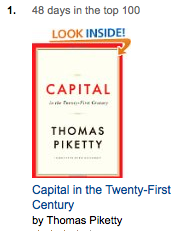

 French economist Thomas Piketty has written a bestseller that reached number one on Amazon.com despite competing with books such as Game of Thrones. Capital in the Twenty-First Century has put a spotlight on the widening gap between the rich and the rest. It is a tremendous achievement to ignite the public discussion around inequality, especially in the US.
The book is so promising, some argue "Nobel-prize worthy", because it uses historic data such as tax records – contrary to ungrounded economic theory. Mr Piketty shows in great detail how inequality evolved over the past 300 years. He writes "[the] debate about the distribution of wealth has long been based on an abundance of prejudice and a paucity of fact."
This is the great power of data: it undermines purely ideological arguments. As we shape the world’s politics with data, transparency and open access are paramount. Even though the data behind the book is public, it is not open. We would love to see a clear licence, better dissemination and simpler formats to enable everyone to engage in the debate around growing inequality.
What's in the book?
Thomas Piketty’s opus magnum includes three major contributions:
- Piketty collected and analysed historic data and shows in great detail how inequality evolved over the past 300 years.
- He develops the theoretical ideas of why capitalism has a tendency towards the concentration of wealth and how economies will evolve over time.
- As an “utopian” solution he proposes a progressive global tax on capital (=wealth).
Among the raving reviews, the book has, not surprisingly, attracted criticsm. However, even free-market economists have praised Piketty's foray into the data and history of wealth, whereas the most ardent critics, e.g. a fund manager, simply ignore his "blizzard of data".
At its core, Piketty offers a compelling explanation of the, what MIT professor Robert Solow calls, “rich-get-richer dynamic”. He attacks the political right and financial elites with no hesitation. Surprisingly, they have no real answer to his claims that the current trends towards more inequality are detrimental. The data gives Piketty an almost undisputed case, but others need to be able to use it to, to perform their own analyses and double-check Piketty's claims.
{kind=link}
Where is the data?
It is highly commendable that Thomas Piketty publishes the underlying Excel files and also the original sources on his academic site. If you are search-savvy, you can find the data behind the book in a more accessible format on Quandl, a data catalogue.
The main source for income data is a dedicated and growing website, the World Top Incomes Database curated by Piketty and three colleagues. There is a similar dataset at the Luxembourg Income Study Database (LIS).
Versions of the World Top Incomes Database, such as a full dump on datahub.io, can be found on third-party sites. However, we recommend using the original source because it has the most up-to-date data and acknowledges the work that goes into collecting the data.
What's the problem?
None of this data is explicitly open for everyone to reuse, clearly licenced and in machine-readable formats.
The data on Piketty's site is buried in the French section only, and full of cumbersome file formats. There is no licensing information on this site to indicate how the data can be reused, nor on the Quandl copy.
The results of a major data collection exercise, the rights to the World Top Incomes Database are clear in the copyright statement "© The World Top Incomes Database." In the absence of an open licence it cannot be used without explicit consent. The availability of downloads and the described terms of attribution implicitly encourage re-use, but without a licence it's not clear whether this is permitted only for research purposes or more widely.
The website and data formats are optimised for humans, with Excel files and point-and-click data selection menus. This is very useful for a quick overview or a specific analysis; a broader use case, however, is virtually impossible without machine-readable data.
In the Luxembourg Income Study Database (LIS), bar for some reports, you only get access to the data if you have a researcher's account. Moreover, the LIS Microdata User Agreement states, among others, the following terms:
to use the microdata only for scholarly, research, or educational purposes
never to use the microdata for commercial purposes;
The data are not open for everyone. The Upshot, the New York Times’ new data journalism site, published an interactive version of different income distributions. To make this happen, they had to directly collaborate with the LIS team.
What next, Mr Piketty?
We have a few suggestions that would strengthen the book’s cause.
- Make the data from your book and in the World Top Incomes Database open using a Creative Commons attribution licence to give users more confidence in how they can use the data
- Provide a full data dump for the World Top Incomes Database
- Create a set of interactive web graphics that are more engaging than those in the book. Or let others "start touching up the charts like models in Vogue" and feature them
- Publish more details on the prediction models and how to replicate them or create your own scenarios
- Share the data, metadata and academic sources in machine-readable formats
- Go through the process of creating an Open Data Certificate
We believe, then, the success of Capital in the Twenty-First Century will doubtless continue. It will inspire others to contribute to the data collection, allow more people to see the facts about inequality and give those in political spheres the arguments for change.